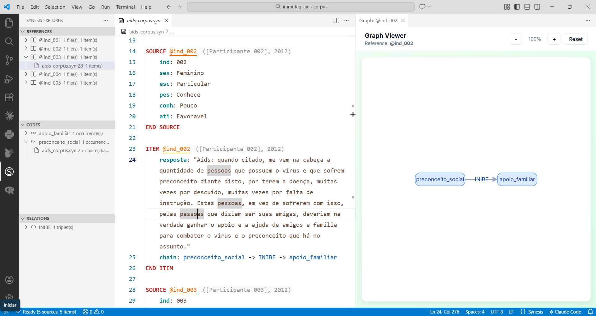

Synesis para Usuários do IRaMuTeQ
Como usar Synesis como camada de governança do corpus qualitativo
1 Synesis para Usuários do IRaMuTeQ
Este tutorial é destinado a pesquisadores que já conhecem o IRaMuTeQ e querem entender como a linguagem Synesis pode complementar — e ampliar — seu fluxo de análise qualitativa.
Você vai aprender a:
- Estruturar um corpus diretamente em Synesis, desde a coleta
- Criar um template tipado com validação automática
- Exportar o corpus Synesis para o formato IRaMuTeQ
- Acrescentar camadas de anotação que alimentam análises além do IRaMuTeQ
Pré-requisito: familiaridade com o formato de corpus do IRaMuTeQ (linhas ****, variáveis e modalidades).
1.1 O Problema: o Corpus IRaMuTeQ é um Destino, não uma Fonte
O fluxo tradicional com o IRaMuTeQ começa fora do software: o pesquisador prepara um arquivo .txt com as linhas **** — geralmente no Word ou em um editor de texto — e o insere para análise. Não há validação automática: um erro tipográfico em uma linha ****, uma modalidade inexistente ou um campo faltante produzem ruído silencioso nos resultados.
Para corpus pequenos e pesquisadores solo, isso é administrável. Para corpus com centenas de textos, múltiplos codificadores ou fases de coleta distintas, torna-se um risco metodológico real.
O Synesis propõe uma inversão desse fluxo: o corpus é estruturado e mantido em Synesis desde o início, validado pelo compilador a cada edição, e exportado para IRaMuTeQ (ou qualquer outro destino) sob demanda. O arquivo .txt do IRaMuTeQ passa a ser um artefato derivado — gerado automaticamente a partir da fonte canônica — e não mais o ponto de partida.
1.2 Parte 1 — O Corpus IRaMuTeQ e sua Estrutura
O IRaMuTeQ organiza corpus textuais com linhas de comando que precedem cada texto. Cada linha começa com **** e lista variáveis no formato *nome_valor.
1.2.1 Exemplo: corpus “aids”
Este corpus é formado pelas respostas à questão “O que você pensa a respeito da Aids?”, coletadas de 300 estudantes do ensino médio (Antunes, 2012). É um dos exemplos canônicos para uso da Classificação Hierárquica Descendente (CHD) com respostas curtas de questionários.
Os exemplos deste tutorial foram extraídos do Manual de uso do software Iramuteq (Camargo & Justo, 2021).
O repositório de estudos de caso do projeto contém versões prontas para uso
As variáveis utilizadas são:
| Variável | Descrição | Modalidades |
|---|---|---|
*ind |
Indivíduo participante | 001 a 312 |
*sex |
Sexo | 1 = masculino, 2 = feminino |
*esc |
Tipo de escola | 1 = pública, 2 = particular |
*pes |
Conhece soropositivo | 1 = conhece, 2 = não conhece |
*conh |
Conhecimento sobre transmissão | 1 = bom, 2 = pouco |
*ati |
Atitude frente ao soropositivo | 1 = favorável, 2 = neutra, 3 = desfavorável |
O corpus no formato IRaMuTeQ tem esta aparência:
**** *ind_001 *sex_1 *esc_2 *pes_2 *conh_1 *ati_3
A aids é um vírus que tem que tomar muito cuidado. É importante conhecer
seu parceiro na hora de realizar atos sexuais. O vírus pode ser transmitido
por causa de um ato irresponsável, transar sem o uso de um preservativo,
ou através de um estupro.
**** *ind_002 *sex_2 *esc_2 *pes_1 *conh_2 *ati_1
Aids: quando citado, me vem na cabeça a quantidade de pessoas que possuem
o vírus e que sofrem preconceito diante disto, por terem a doença, muitas
vezes por descuido, muitas vezes por falta de instrução. Estas pessoas,
em vez de sofrerem com isso, pelas pessoas que diziam ser suas amigas,
deveriam na verdade ganhar o apoio e a ajuda de amigos e família para
combater o vírus e o preconceito que há no assunto.
**** *ind_003 *sex_2 *esc_2 *pes_2 *conh_2 *ati_3
Eu penso que é uma questão complicada, porque a pessoa fica mal e tem que
viver de remédios e tem medo de passar pra outra.
**** *ind_004 *sex_2 *esc_2 *pes_2 *conh_2 *ati_1
Uma dst, devido a falta de prevenção do casal. Hoje já existe tratamento,
porém pessoas que sofrem desta doença sofrem também de um grande preconceito
da sociedade.
**** *ind_005 *sex_2 *esc_2 *pes_2 *conh_2 *ati_1
É uma doença séria, que sofre muito preconceito. Mas que tem que passar a
ser respeitada mais, pois sendo cuidado e tendo proteção, não faz mal algum.Cada bloco **** é a unidade de análise — o IRaMuTeQ chama isso de unidade de contexto inicial (UCI). Os valores após **** são os metadados do respondente; o texto que segue é o conteúdo analisado.
1.3 Parte 2 — Criando o Template Synesis
O template (.synt) é o coração do projeto Synesis. Ele declara os campos, seus tipos e suas regras — é a partir dele que o compilador valida cada anotação.
Para o corpus “aids”, o template seria:
TEMPLATE aids_corpus
# Pesquisa: Representações Sociais da Aids
# Escopo: Respostas à questão: "O que você pensa a respeito da Aids?"
# Corpus: Respostas de 300 estudantes do ensino médio (Antunes, 2012).
# ============================================
# CAMPOS DE SOURCE
# ============================================
SOURCE FIELDS
REQUIRED ind, sex, esc, pes, conh, ati
END SOURCE FIELDS
FIELD ind TYPE TEXT
SCOPE SOURCE
DESCRIPTION "Identificador único do participante"
END FIELD
FIELD sex TYPE ENUMERATED
SCOPE SOURCE
DESCRIPTION "Sexo do participante"
VALUES
1: "Masculino"
2: "Feminino"
END VALUES
END FIELD
FIELD esc TYPE ENUMERATED
SCOPE SOURCE
DESCRIPTION "Tipo de escola"
VALUES
1: "Pública"
2: "Particular"
END VALUES
END FIELD
FIELD pes TYPE ENUMERATED
SCOPE SOURCE
DESCRIPTION "Conhece pessoa soropositiva"
VALUES
1: "Conhece"
2: "Não conhece"
END VALUES
END FIELD
FIELD conh TYPE ENUMERATED
SCOPE SOURCE
DESCRIPTION "Conhecimento sobre transmissão do HIV"
VALUES
1: "Bom conhecimento"
2: "Pouco conhecimento"
END VALUES
END FIELD
FIELD ati TYPE ENUMERATED
SCOPE SOURCE
DESCRIPTION "Atitude frente ao soropositivo"
VALUES
1: "Favorável"
2: "Neutra"
3: "Desfavorável"
END VALUES
END FIELD
# ============================================
# CAMPOS DE ITEM
# ============================================
ITEM FIELDS
REQUIRED resposta
END ITEM FIELDS
FIELD resposta TYPE QUOTATION
SCOPE ITEM
DESCRIPTION "Resposta à questão aberta sobre a Aids"
END FIELDPor que isso importa: qualquer tentativa de registrar ati: 4 ou sex: 3 será rejeitada pelo compilador antes que os dados cheguem ao IRaMuTeQ. Com 300 participantes e múltiplos digitadores, esse tipo de verificação automática elimina uma categoria inteira de erros.
1.4 Parte 3 — Estruturando o Corpus em Synesis
Com o template definido, cada respondente é registrado diretamente em Synesis como um par SOURCE + ITEM. Esta é a etapa de entrada de dados — o equivalente a preparar o arquivo .txt para o IRaMuTeQ, mas com validação automática a cada registro.
O corpus dos primeiros cinco participantes em Synesis:
SOURCE @ind_001
ind: 001
sex: 1
esc: 2
pes: 2
conh: 1
ati: 3
END SOURCE
ITEM @ind_001
resposta: A aids é um vírus que tem que tomar muito cuidado. É importante conhecer seu parceiro na hora de realizar atos sexuais. O vírus pode ser transmitido por causa de um ato irresponsável, transar sem o uso de um preservativo, ou através de um estupro.
END ITEM
SOURCE @ind_002
ind: 002
sex: 2
esc: 2
pes: 1
conh: 2
ati: 1
END SOURCE
ITEM @ind_002
resposta: Quando citado, me vem na cabeça a quantidade de pessoas
que possuem o vírus e que sofrem preconceito diante disto, por terem a doença, muitas vezes por descuido, muitas vezes por falta de instrução. Estas pessoas, em vez de sofrerem com isso, pelas pessoas que diziam ser suas amigas, deveriam na verdade ganhar o apoio e a ajuda de amigos e família para combater o vírus e o preconceito que há no assunto.
END ITEM
SOURCE @ind_003
ind: 003
sex: 2
esc: 2
pes: 2
conh: 2
ati: 3
END SOURCE
ITEM @ind_003
resposta: Eu penso que é uma questão complicada, porque a pessoa fica mal e tem que viver de remédios e tem medo de passar pra outra.
END ITEM
SOURCE @ind_004
ind: 004
sex: 2
esc: 2
pes: 2
conh: 2
ati: 1
END SOURCE
ITEM @ind_004
resposta: Uma dst, devido a falta de prevenção do casal. Hoje já existe tratamento, porém pessoas que sofrem desta doença sofrem também de um grande preconceito da sociedade.
END ITEM
SOURCE @ind_005
ind: 005
sex: 2
esc: 2
pes: 2
conh: 2
ati: 1
END SOURCE
ITEM @ind_005
resposta: É uma doença séria, que sofre muito preconceito. Mas que tem que passar a ser respeitada mais, pois sendo cuidado e tendo proteção, não faz mal algum.
END ITEMCada vez que um novo registro é adicionado, o compilador verifica os valores contra o template. Tentar registrar ati: 4 ou sex: 3 gera um erro imediato — antes que o dado malformado entre no corpus.

1.5 Parte 4 — Exportando para IRaMuTeQ
Com o corpus em Synesis, a exportação para o formato IRaMuTeQ é um único comando:
synesis export --format iramuteq corpus.synp --output aids_iramuteq.txtO arquivo gerado é diretamente compatível com o IRaMuTeQ:
**** *ind_001 *sex_1 *esc_2 *pes_2 *conh_1 *ati_3
A aids é um vírus que tem que tomar muito cuidado. É importante conhecer
seu parceiro na hora de realizar atos sexuais. O vírus pode ser transmitido
por causa de um ato irresponsável, transar sem o uso de um preservativo,
ou através de um estupro.
**** *ind_002 *sex_2 *esc_2 *pes_1 *conh_2 *ati_1
Aids: quando citado, me vem na cabeça a quantidade de pessoas que possuem
o vírus e que sofrem preconceito diante disto...A correspondência entre os dois formatos é direta:
| Synesis | IRaMuTeQ |
|---|---|
Bloco SOURCE |
Linha **** com variáveis |
Campo ind: 001 |
*ind_001 |
Campo sex: 1 |
*sex_1 |
Campo ati: 3 |
*ati_3 |
Campo QUOTATION no ITEM |
Texto que segue a linha **** |
O arquivo .txt pode então ser aberto no IRaMuTeQ para CHD, análise de similitude, AFC, nuvem de palavras ou qualquer outra análise disponível no software — exatamente como no fluxo tradicional, mas com a garantia de que o corpus foi validado antes de chegar ali.
1.6 Parte 5 — Synesis como Hub de Análise
A principal vantagem de manter o corpus em Synesis não é a exportação para IRaMuTeQ — é que o mesmo corpus pode alimentar múltiplos destinos simultaneamente:
Corpus Synesis (.synp + .bib + .syn + .synt)
│
├──► Compilador valida contra template (.synt)
│ │
│ └── Erros reportados antes da análise
│
├──► Exportação IRaMuTeQ (.txt)
│ └── CHD, similitude, AFC, nuvem de palavras
│
├──► Exportação CSV/JSON
│ └── Jupyter, R, análise estatística
├──► synesis.load() no Jupyter, R
│ ├── df_metadata → variáveis do SOURCE (sex, esc, ati...)
│ ├── df_items → textos + campos do ITEM
│ ├── df_codes → códigos atribuídos
│ └── df_chains → relações causais
│
├──► Exportação REFI-QDA
│ └── Atlas.ti, NVivo, MAXQDA
│
└──► Codificação adicional no próprio corpus
├── CODE (categorias temáticas)
├── CHAIN (relações causais entre conceitos)
├── MEMO (notas analíticas do pesquisador)
└── SCALE (scores numéricos por item)1.6.1 Adicionando anotações ao corpus
Após rodar a CHD no IRaMuTeQ e identificar classes temáticas, o pesquisador pode voltar ao corpus Synesis e enriquecer as anotações. Por exemplo, marcar os textos que pertencem à Classe 2 da CHD com um código explícito:
ITEM @ind_002
resposta: Quando citado, me vem na cabeça a quantidade de pessoas
que possuem o vírus e que sofrem preconceito diante disto
chain: preconceito_social -> INIBE -> apoio_familiar
END ITEMEssas anotações não interferem na exportação para IRaMuTeQ — mas ficam disponíveis para exportação para Neo4j, para análise de co-ocorrência de códigos em Jupyter, ou para uma segunda rodada no IRaMuTeQ com variáveis adicionais derivadas da codificação.
1.6.2 Acesso programático via API
O corpus compilado também pode ser carregado diretamente em um notebook Jupyter:
import synesis
corpus = synesis.load("aids.synp")
# DataFrame de metadados dos participantes
df_meta = corpus.sources()
# DataFrame de textos com metadados vinculados
df_items = corpus.items()
# DataFrame de códigos atribuídos
df_codes = corpus.codes()
# DataFrame de cadeias causais
df_chains = corpus.chains()Cada DataFrame já respeita os tipos declarados no template — ati chega como inteiro com valores 1, 2 ou 3; nunca como string ou valor fora do intervalo.
1.7 Parte 6 — Synesis como Camada de Governança
Para pesquisadores solo com corpus pequenos, o IRaMuTeQ sozinho é suficiente. O Synesis passa a fazer diferença em três cenários:
Corpus volumosos. Com 300 ou mais participantes, a probabilidade de erro de digitação nas linhas **** é alta. O compilador Synesis captura esses erros antes da análise, eliminando o risco de resultados contaminados por dados malformados.
Trabalho em equipe. Quando múltiplos pesquisadores digitam ou codificam o mesmo corpus, o template funciona como contrato: todos os campos, todos os valores permitidos e todas as relações declaradas estão em um único arquivo versionável. Discrepâncias entre codificadores são detectadas na compilação, não na reunião de orientação.
Pesquisa longitudinal ou multi-etapas. Quando o corpus cresce ao longo do tempo — novas coletas, novos participantes, novas variáveis — o Synesis mantém a integridade entre versões. O histórico de decisões ontológicas pode ser documentado diretamente nos arquivos .syno com comentários datados:
# DECISÃO 2026-03-01: separamos "preconceito" em dois conceitos após
# identificar distinção entre preconceito declarado e comportamento relatado
# nas entrevistas 45-60.
ONTOLOGY preconceito_declarado
descricao: "Expressão verbal de atitude discriminatória"
grupo: dimensao_social
END ONTOLOGY
ONTOLOGY preconceito_comportamental
descricao: "Ação discriminatória relatada pelo participante"
grupo: dimensao_social
END ONTOLOGY1.8 Resumo
| Aspecto | IRaMuTeQ | Synesis + IRaMuTeQ |
|---|---|---|
| Validação de corpus | Nenhuma | Compilador verifica tipos e modalidades |
| Fonte canônica dos dados | Arquivo .txt |
Corpus .syn + template .synt |
| Destinos de exportação | Resultados internos | IRaMuTeQ, CSV, JSON, REFI-QDA, Neo4j |
| Anotação interpretativa | Não suportada | CODE, CHAIN, MEMO, SCALE |
| Trabalho em equipe | Manual | Template como contrato compartilhado |
| Acesso programático | Não disponível | synesis.load() no Jupyter/R |
O IRaMuTeQ continua sendo a ferramenta indicada para CHD, análise de similitude e AFC. O Synesis não substitui essas análises — ele governa o corpus que as alimenta, e abre o mesmo corpus para análises que o IRaMuTeQ não realiza.
1.9 Próximos Passos
- Como Definir uma Ontologia — criar vocabulário de códigos para anotação
- Como Criar Chains — declarar relações causais entre conceitos
- Exportações Disponíveis — referência completa dos formatos de saída
- Referência da Linguagem — especificação formal da sintaxe Synesis
Ficou com dúvidas? Consulte GitHub Discussions ou abra uma issue no repositório.